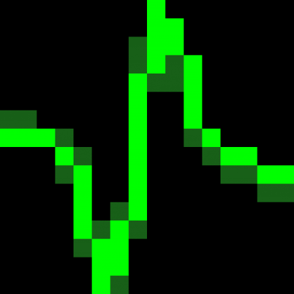

The latest version is available in its GitHub repository. Documentation is currently very sparse. A thesis chapter that details the many steps involved will be available fairly soon, as will a publication detailing an alternative implementation.
Here are a couple of screenshots. The first shows the display of raw data, with higher frequency spike data displayed in two different layouts (2D spatial on the left and 1D vertical in the middle), and lower frequency LFP data displayed in a 1D vertical layout at right:
{kind=link}
The second screenshot shows sorted data. In the list at middle right, single units (highlighted in green) are selected (in blue). To its right are the corresponding mean multichannel waveforms. Selected channels and spike time ranges are highlighted by green horizontal lines, shown underneath the waveforms (difficult to see in this case). The middle window is a fully manipulable 3D cluster plot of the resulting dimension reduced space (PCA, ICA, time, spatial position), with each point representing one spike:
{kind=link}
For more details, see the current README.md or the brief TUTORIAL.md
A much older version, along with some sample data, is available here, and is described in the paper Python for large-scale electrophysiology.